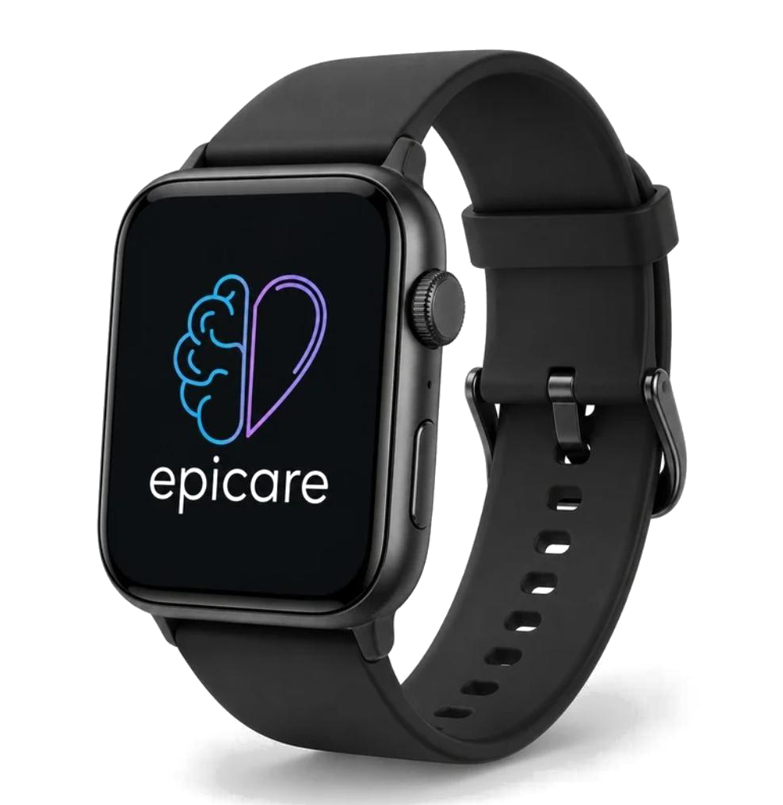
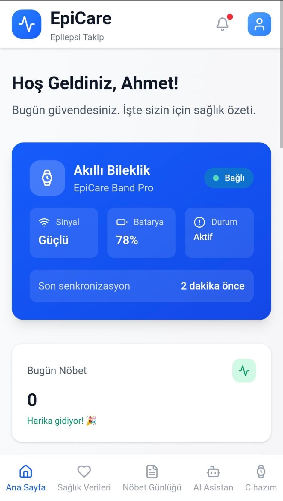
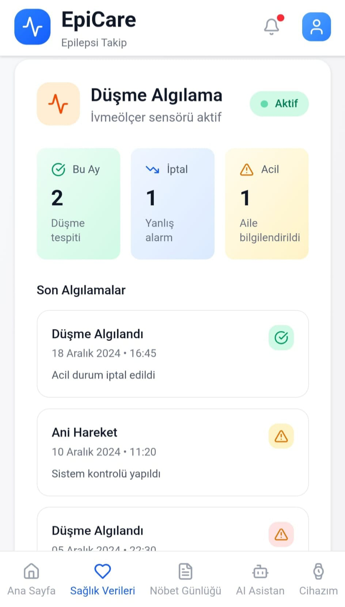
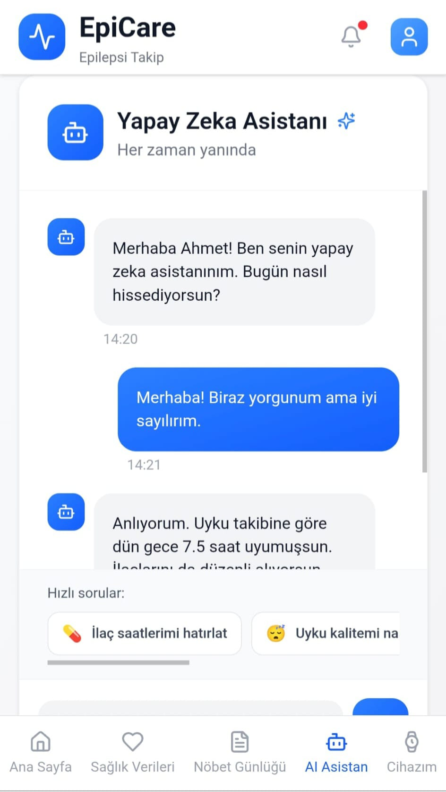
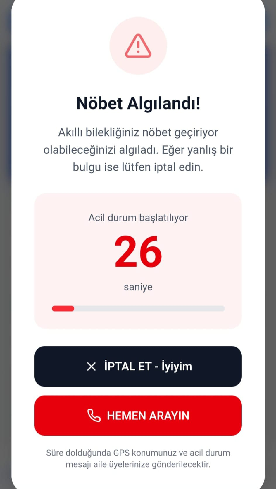
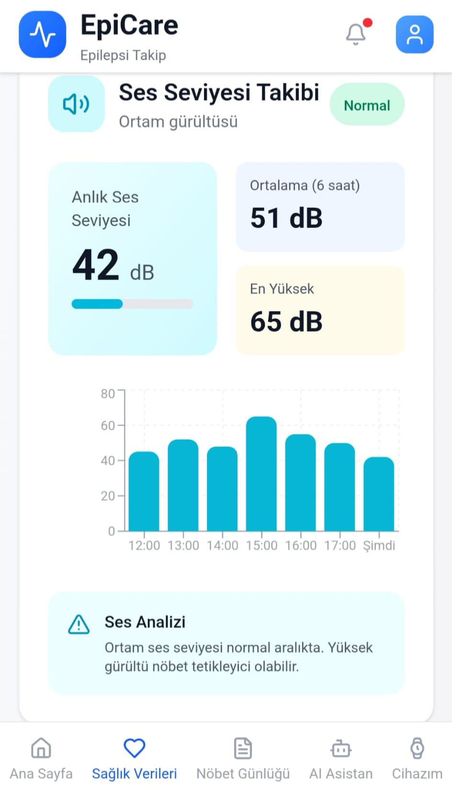
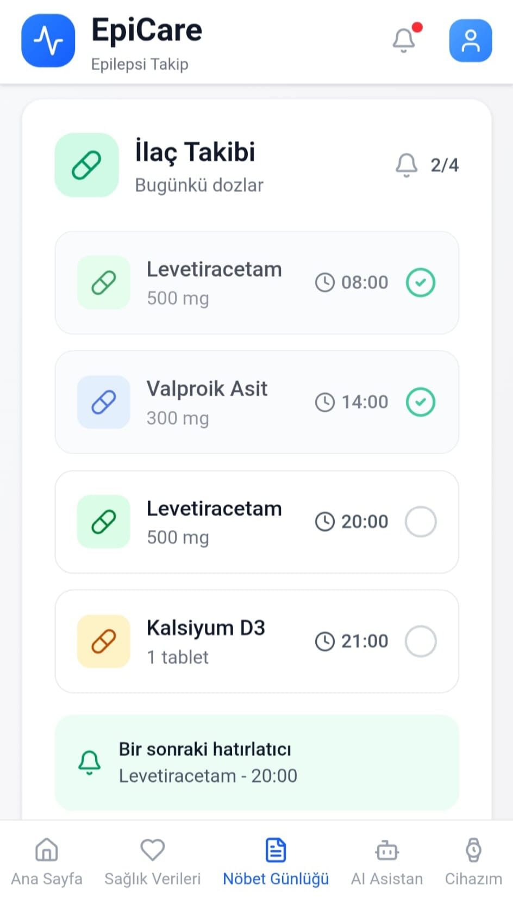

by TRİMİND
Epicare
Güvenli bir yaşam için akıllı bir dokunuş.
Epilepsi takibini saat, mobil uygulama ve yapay zeka ile daha anlaşılır hale getiren akıllı sağlık sistemi.


Akıllı saat
Bilekte başlayan güvenlik katmanı.
Epicare Band, gün içindeki sinyalleri sessizce toplar ve riskli anları uygulamaya taşır.
Gün boyu ölçüm
Hareket, uyku, nabız ve çevresel veriler tek akışta izlenir.
Risk sinyali
Olağan dışı durumlar uygulamaya ve AI analizine aktarılır.
Akıllı uyarı
Yanıt alınamazsa yakınlara konum gider, çevredekilere sesli ilk yardım komutu verilir.
Mobil uygulama
Takip, uygulamada anlaşılır hale gelir.
Cihaz durumu, sağlık verileri, AI asistanı ve acil durum akışı tek sade arayüzde.





Nasıl çalışır?
Saat veriyi toplar. Uygulama gösterir. AI riski yorumlar.
01Sensörler
02Akıllı Saat
03Mobil Uygulama
04Kişisel AI
05Risk Kontrolü
06Acil Bildirim
Risk algılanır
Sensör verileri olağan dışı bir durumu işaret eder.
Kullanıcı uyarılır
Uygulama ve saat kısa bir doğrulama süreci başlatır.
Yanıt yoksa yardım başlar
Yakınlara konum gider, bileklik çevredekilere sesli ilk yardım komutu verir.
Kişisel analiz
Kullanıcı verilerini kendi rutinine göre yorumlar.
Çoklu sensör
Hareket, uyku, ses ve çevresel sinyalleri birlikte okur.
Konum bildirimi
Acil durumda yakınlara doğru lokasyon gönderir.
Acil akış
Uyarı, doğrulama ve bildirim adımlarını yönetir.
Sesli ilk yardım
Nöbet anında çevredekilere ne yapmaları gerektiğini sesli anlatır.
Takım
Epicare’i geliştiren ekip.
Şüheda Yanık
Takım Kaptanı & Donanım Geliştirme
Rüveyda Kara
Yazılım Geliştirme
Elanur Nadir
Tasarım & Kullanıcı Deneyimi
İletişim
Epicare ile tanışın.
İş birliği, tanıtım ve ürün hakkında konuşmak için bize ulaşabilirsiniz.